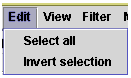
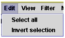

Edit Menu The Edit menu in the Map Viewer window has two options:  Select all Lets you select all of the maps and all of the objects on all of the maps in the Map Viewer pane. Invert selection Lets you reverse the current selection so that selected maps/objects are deselected as all others are selected.
The Edit menu in the Map Viewer window has two options:

Lets you select all of the maps and all of the objects on all of the maps in the Map Viewer pane.
Lets you reverse the current selection so that selected maps/objects are deselected as all others are selected.
Copyright 2002 by the National Center for Genome Resources. All rights reserved. National Center for Genome Resources